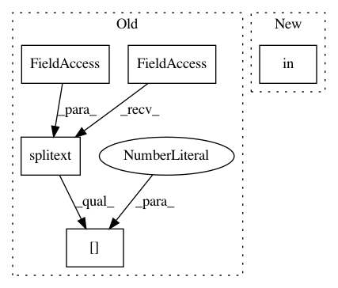

5b470f8f8c0146591b42462c6b30e85a2117261f,ilastik/applets/dataSelection/dataSelectionGui.py,DataSelectionGui,_createDatasetInfo,#DataSelectionGui#,549
Before Change
h5Exts = [".ilp", ".h5", ".hdf5"]
n5Exts = [".n5"]
if os.path.splitext(datasetInfo.filePath)[1] in h5Exts + n5Exts:
if os.path.splitext(datasetInfo.filePath)[1] in n5Exts:
datasetNames = self.getPossibleN5InternalPaths( absPath )
else:
After Change
n5Exts = [".n5"]
file_extension = os.path.splitext(data_path)[1]
if file_extension in h5Exts + n5Exts:
if file_extension in n5Exts:
datasetNames = self.getPossibleN5InternalPaths( absPath )
else:
datasetNames = self.getPossibleH5InternalPaths( absPath )
In pattern: SUPERPATTERN
Frequency: 3
Non-data size: 5
Instances
Project Name: ilastik/ilastik
Commit Name: 5b470f8f8c0146591b42462c6b30e85a2117261f
Time: 2019-06-17
Author: tomaz.vieira@embl.de
File Name: ilastik/applets/dataSelection/dataSelectionGui.py
Class Name: DataSelectionGui
Method Name: _createDatasetInfo
Project Name: ilastik/ilastik
Commit Name: 5ee3708f842d739d6effe24fbb0464c40e1a330d
Time: 2019-07-12
Author: tomaz.vieira@embl.de
File Name: ilastik/applets/dataSelection/opDataSelection.py
Class Name: DatasetInfo
Method Name: pathIsHdf5
Project Name: ilastik/ilastik
Commit Name: 5ee3708f842d739d6effe24fbb0464c40e1a330d
Time: 2019-07-12
Author: tomaz.vieira@embl.de
File Name: ilastik/applets/dataSelection/opDataSelection.py
Class Name: DatasetInfo
Method Name: pathIsN5